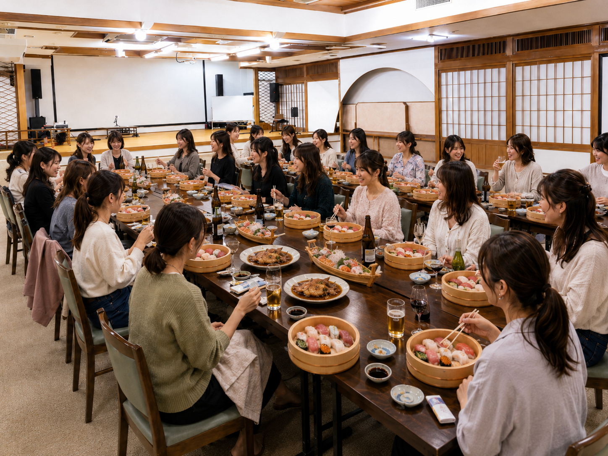

学んだAIを、
自分のサービスに変える2日間
AI合宿へのご参加、ありがとうございます。
“最新AI × 実践 × つながり” にどっぷり浸かる、AIづくしの1泊2日。
事前に決めてきたものを、仲間と講師といっしょに一気に形にしましょう。
当日の情報はこのページにまとめていきます。ブックマークしておいてくださいね。
海鮮料理に、最新AI情報、すぐ使えるTIPS、成果発表会まで。作る時間も楽しむ時間もたっぷりです。わくわくしながらお越しください。当日お会いできるのを楽しみにしています。
当日の雰囲気


これを持ち帰ろう
形になった成果物
LP・ツール・講座導線など、自分のサービスに必要なものを1つ完成させて持ち帰る
Codexの使い方
CodexでのLP制作の流れを、自分の手で再現できるようになる
動き出す自分
棚卸しで決めた「最初の一手」を、合宿中にしっかり動かし始める
当日の会場・集合
タイムスケジュール
2日間の大きな流れです。詳細は当日ご案内します。
6時間の進め方
「やりたいこと」を、当日どう進めて形にするか。まずは全員共通の流れ、そのあと一人ひとりのゴールと手段です。
全員共通の6時間の流れ
何で作る？（手段の目安）
- LP・サイト → Claude Code（あや式）／デザイン性重視ならCodex
- アプリ・ツール → Claude Code
- 会員サイト → Claude Code（index 1枚・ボタン切替型）
- 講座・導線の設計 → Claudeで設計 → 必要ならLP化
- データ管理・カルテ → スプレッドシート＋GAS
持ち物・事前準備
合宿は、集中して作りきる時間です。当日の成果は事前準備で決まるので、必ずご準備を。
カテゴリごとに分けています。上から順にチェックしてみてください。
いちばん大事な事前準備ここで当日の成果が決まります
- 作るものを1つに絞る（LP / アプリ / 講座 / 導線 など、まず1つ）
- 持参する素材：文章／画像（写真・ロゴ・参考ビジュアル）／価格や情報／参考にしたいURL など
制作の持ち物パソコンなど、作るための道具
- ノートPC＋充電器（必須）
- メモ帳・筆記用具
泊まりの持ち物宿泊にあたって必要なもの
- 洗顔・化粧水（宿のアメニティに無いため各自で）
- マイパジャマ派の方は、パジャマを（浴衣はあります）
- 歩きやすい靴（会場までの途中に階段があります）
- お箸など、こだわりがあれば
宿に備え付けがあるものこれは持ってこなくてOK
- タオル・歯ブラシ・シャンプー類・浴衣・スリッパ など
- 連泊の方は、タオルは2日間続けてお使いください
服装（できれば白テーマで）みんなで撮る写真がそろって素敵に
- もし「サムシング白」をお持ちなら、ぜひ。白いボトムスがあると当日のお楽しみと合わせて素敵です
- わざわざ買わなくて大丈夫。手持ちでOK、無理のない範囲で、なんでもOKです
食事についてDAY1のランチ・DAY2の朝食
各自持参、または近くに食べに行ってもOK。講師3人は食べながら宿に滞在しています。
自由です。持参・近くで購入・食べないのも自由。10:30の成果発表に向けて、10:00頃には戻ってきてください。
当日の最新トピックス
今回の合宿で、私たちからシェアする最新コンテンツです。
私たちがいま注目しているAIツール「Codex」を、はじめての方にも分かるようにまとめました。比較 → 導入 → 便利な機能 の順にご覧ください。
Claude Code と Codex
どちらも「日本語で指示するだけでLP・サイト・ツールを作れる」AIエージェントです。できることはほぼ同じですが、得意なことが少しだけ違います。
Claude Code
- 先に広まったぶん、解説情報が多く調べながら始めやすい
- すでに使い慣れている人はそのままでOK
- がっつり使うなら上位プランが向いている
Codex
- ChatGPTの有料プランの枠で使い始めやすい
- 画像生成と相性がよく、デザイン寄りの制作に強い
- 日本語で頼むだけで、完成品まで仕上げてくれる
デスクトップアプリの導入方法
Codexにはいくつかの使い方がありますが、迷ったらデスクトップアプリ版を入れておけばOK。パソコンの中のファイルをそのまま渡して作業してもらえるので、はじめての方でもいちばん簡単に始められます。ここからは、その導入手順を詳しくご案内します。
- Googleで「Codex」と検索し、いちばん上に出てくるOpenAIの公式サイトを開く
- ページ内の
Download for macOSボタンをクリックし、ダウンロードが終わるまで待つ - ダウンロードしたファイルを開く
- 出てきたCodexのアイコンを、隣のアプリケーションフォルダーにドラッグ＆ドロップすれば完了
- タスクバーから Microsoft Store を開く（見つからないときは画面下の検索欄に「Microsoft Store」と入力）
- 上の検索バーに
OpenAI Codexと入力して検索 - 検索結果のCodexの 入手 ボタンをクリックすると、自動でインストールが始まる（数分かかることがあります）
① ログイン
アプリを起動するとログイン画面が表示されるので、普段使っているChatGPTのアカウントでログインします。Google や Microsoft のアカウントで ChatGPT にログインしている方は、そのアカウントでも大丈夫です。
② 作業フォルダーを決める
Codexに「どのフォルダーで作業してもらうか」を選びます。おすすめは Codex のような専用フォルダーを1つ作り、その中に Codex/議事録 のように目的別の個別フォルダーを分けておく方法。あとから見返すときもすっきりして使いやすくなります。
③ 安全のための注意
Codexは指定したフォルダーの中だけで作業し、その外のファイルを触るときは基本的に毎回確認してくれます。だからこそ、作業させる範囲は1つのフォルダーに絞っておくのが安心です。給与明細や顧客情報など「見られたら困るファイル」は、専用フォルダーに直接置かないようにしましょう。どうしても使いたい場合は、原本ではなくコピーを置き、秘密の情報は書き換えておくのがおすすめです。
Codexの便利な機能
Codexにはうれしい機能がたくさん。ここでは代表的なものを、さらっとご紹介します。
プラグイン
Gmail や Googleドライブ、Slack など、よく使うサービスと連携。アプリを行き来せず、作業をCodexの中だけで完結できます。
画像生成
Codexの中で、そのまま画像を作れます。別のツールを開かなくても、制作の途中で必要になった画像素材をその場で用意できるのが大きな強みです。
音声入力
キーボードで打たなくても、声で話すだけで指示を文字にして入力。長めの指示もサッと伝えられて、思いのほか快適です。
メモリ機能
好みや作業スタイル、プロジェクトごとのルールを覚えてくれるので、毎回ゼロから説明する手間が減っていきます。
コンピューターユーズ
画面を見て、マウスやキーボードを自分で操作。連携していないアプリの操作まで任せられます（許可したアプリだけ・確認しながらが安心）。
ゴールモード
「最終的にこうなったらゴール」だけ伝えておくと、そこに到達するまで自動で作業を続けてくれます。前に張り付いておく必要がありません。
個人で取り組む課題
名前を押すと、その人が合宿で「何を・何で・どうしたいか」が見られます。お互いを知って、刺激し合いましょう。